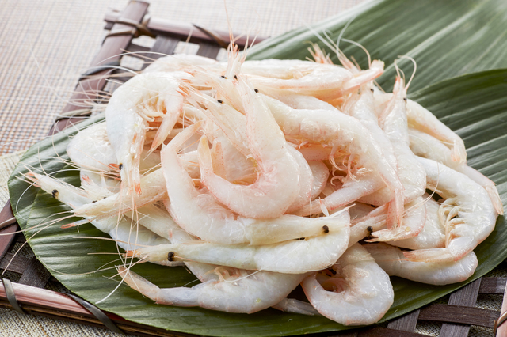
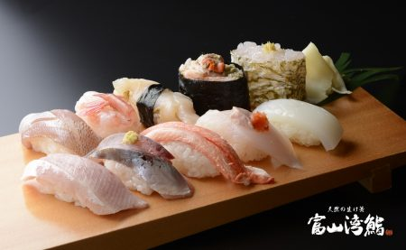

富山県のご当地グルメ
富山県には美味しものがたくさんあります！そのなかでもおすすめのものを紹介します。
- ○ます寿司
- ます寿司は富山県の郷土料理であり、鱒を用いて発酵させずに酢で味付けした押し寿司です。
- 現在は富山県内にも多くのます寿司の専門店があります。
- ○寒ブリ
- 富山の冬の風物詩と言えば氷見の寒ブリです。
- 富山湾の中心部に位置する氷見市近郊でとれた寒ブリは脂の乗りが格段に違い、全国的にも有名です。
- そのままお刺身で食べるのはもちろん、ブリしゃぶやブリ大根など、さまざまな調理法で楽しめます。
- ○シロエビ
- シロエビは「富山湾の宝石」とも称され、富山県でしかとることのできな貴重なエビです。
- 「富山県のさかな」にも認定されており、お刺身やお寿司、天ぷらや唐揚げなどさまざまな食べ方で楽しまれています。

- ○富山湾鮨
- 富山湾は「天然の生け簀」と称されるほど、年間を通じて豊かな海の幸に恵まれています。
- 「富山湾鮨」は富山湾でとれた新鮮な地魚を使用しています。シャリのお米も富山県産のものを使っています。
☆おすすめの寿司ネタランキング
- ブリトロ
- カワハギ
- ノドグロ
- ホタルイカ
- 本マグロ
もっとたくさんの種類があり、季節によって旬が変わります。

富山県に来たときの食事やお土産におすすめです！
ホームに戻る